청소년상담사-1급(1교시) (2024-10-05 기출문제)
1과목: 상담사 교육 및 사례지도
1. 수퍼비전에 관한 설명으로 옳지 않은 것은?
- 수퍼바이지가 점차 유능해짐에 따라, 전문적 기술수행에 대한 수퍼바이저의 지도를 더 필요로 한다.
- 상담자의 상담수행을 감독 또는 지도하는 활동이다.
- 라틴어의 super와 videre의 합성어에서 유래되었다.
- 수퍼바이저가 수퍼바이지에게 지혜와 전문성을 전수하는 것이다.
- 상담 분야의 선배 또는 보다 전문적인 위치에 있는 사람이 이 분야의 후배 또는 미숙한 구성원에게 제공하는 개입이다.
(정답률: 알수없음)
2. 인간중심 수퍼비전에서 수퍼바이저의 질문과 반응으로 옳은 것을 모두 고른 것은?
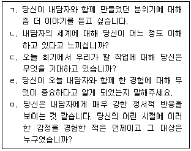
- ㄱ, ㄴ
- ㄴ, ㄹ
- ㄱ, ㄷ, ㅁ
- ㄱ, ㄴ, ㄷ, ㄹ
- ㄱ, ㄴ, ㄷ, ㄹ, ㅁ
(정답률: 알수없음)
3. 버나드(J. Bernard)의 변별모델에서 수퍼바이저의 역할로 옳은 것은?
- 평가자
- 교사
- 관리자
- 감독자
- 운영자
(정답률: 알수없음)
4. 청소년상담사에 관한 설명으로 옳은 것을 모두 고른 것은?
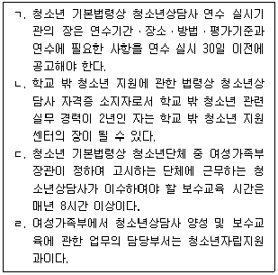
- ㄱ, ㄴ
- ㄴ, ㄷ
- ㄷ, ㄹ
- ㄱ, ㄷ, ㄹ
- ㄱ, ㄴ, ㄷ, ㄹ
(정답률: 알수없음)

5. 홀로웨이(E. Holloway)의 수퍼비전에 관한 설명으로 옳지 않은 것은?
- 수퍼비전의 기능에는 모델링이 포함되어 있다.
- 수퍼비전의 과제로는 상담 기술, 사례개념화, 정서적 자각, 자기평가, 지지하기가 있다.
- 수퍼비전 초기 단계에는 수퍼비전 계약의 중요성을 강조하였다.
- 성숙 단계에서는 수퍼비전 관계에서 개인적 성향이 증가하고 역할 중심의 관계 성향은 감소한다.
- 수퍼비전 관계의 종결 단계에 이르면 힘의 구조가 변화된다.
(정답률: 알수없음)
6. 성공적인 수퍼비전을 방해하는 수퍼바이지의 특성을 모두 고른 것은?
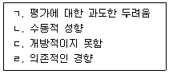
- ㄱ
- ㄴ
- ㄴ, ㄷ
- ㄴ, ㄷ, ㄹ
- ㄱ, ㄴ, ㄷ, ㄹ
(정답률: 알수없음)
7. 집단 수퍼비전의 장점이 아닌 것은?
- 다른 상담양식을 이해하고 수용할 수 있는 또 다른 방법을 볼 수 있게 해준다.
- 수퍼바이지의 자기인식을 현실검증할 수 있게 해준다.
- 집단에 참여한 수퍼바이지 개인들에게 필요한 개별적인 학습이 충분히 제공된다.
- 수퍼바이지들이 안전한 환경에서 새로운 행동을 시도할 수 있는 기회를 갖게 한다.
- 다른 수퍼바이지의 사례를 통해 다양한 상담개입방법에 대한 이해를 돕는다.
(정답률: 알수없음)
8. 수퍼바이저와 수퍼바이지의 관계를 형성하는 데 필요한 요소로 옳지 않은 것은?
- 신뢰 형성
- 자기개방 격려
- 존중과 안전감
- 다양성의 사안들 검토
- 수퍼비전 관계의 범위를 제한하지 않기
(정답률: 알수없음)
9. 수퍼비전에서 병행과정에 관한 설명으로 옳지 않은 것은?
- 수퍼바이지의 미해결된 문제는 병행과정의 산물이다.
- 삼자관계는 병행과정의 기초가 된다.
- 수퍼바이저가 수퍼바이지에게 반응하는 것을 보고, 수퍼바이지는 내담자에게 어떻게 반응해야 하는지를 배우게 된다.
- 병행과정은 전이-역전이와 관련이 있다.
- 정신역동적 수퍼비전에 그 뿌리를 두고 있다.
(정답률: 알수없음)
10. 수퍼비전에서의 평가에 관한 설명으로 옳지 않은 것은?
- 평가과정은 수퍼비전 관계가 시작되는 시점부터 미리 계획되는 것이 좋다.
- 수퍼비전 계약을 할 때 평가과정, 방법, 시점 등을 명시적으로 기술할 필요가 있다.
- 수퍼바이저는 평가의 기준을 수퍼바이지와 공유하지 않아야 한다.
- 수퍼바이저와 수퍼바이지가 서로에게 피드백을 주고받는 과정과 절차를 계획하는 것이 중요하다.
- 기관에서의 수퍼바이저 평가나 피드백은 수퍼비전을 마쳤을 때 만족도 평가 등으로 이루어질 수 있다.
(정답률: 알수없음)
11. 수퍼바이지에 대한 평가 항목에 해당하지 않는 것은?
- 상담언어반응 기술
- 개입기술 실행 능력
- 사례개념화 능력
- 상담목표설정 능력
- 수퍼바이저에 대한 평가 능력
(정답률: 알수없음)
12. 상담회기 중 일어난 상담자의 생각과 느낌 등의 내적과정을 회상하도록 하기 위해 상담 녹음 장치를 활용하는 수퍼비전 방식은?
- 대인관계 과정 회상(IPR)
- 현장 수퍼비전
- 라이브 수퍼비전
- 이어폰 사용(BITE) 수퍼비전
- 모델링
(정답률: 알수없음)
13. 로건빌, 하디와 델워스(C. Loganbill, E. Hardy, & U. Delworth)의 수퍼비전 개입에 관한 설명으로 옳은 것은?
- 초급 상담자의 불안을 낮추고 자신감을 증가시키기 위해서는 직면적 개입을 사용해야 한다.
- 초급 상담자에게 처방적 개입은 하지 않아야 한다.
- 모든 발달단계의 상담자에게 필요한 수퍼비전 개입은 승화적 개입이다.
- 처방적 개입과 개념적 개입은 상담자의 장점과 긍정적 행동을 먼저 강조한 후에 이루어져야 한다.
- 상담자의 내적 생각과 감정에 주의를 기울이도록 하는 것은 개념적 개입의 전략들이다.
(정답률: 알수없음)
14. 키치너(K. Kitchener)가 제시한 상담자의 윤리 원칙으로 옳은 것을 모두 고른 것은?
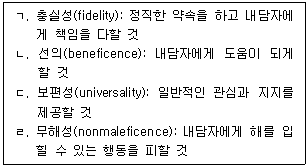
- ㄱ, ㄷ
- ㄴ, ㄹ
- ㄷ, ㄹ
- ㄱ, ㄴ, ㄹ
- ㄱ, ㄴ, ㄷ, ㄹ
(정답률: 알수없음)
15. 버나드(J. Bernard)와 굳이어(R. Goodyear)가 제시한 수퍼바이저의 주요 윤리적 주제를 모두 고른 것은?
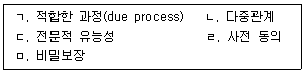
- ㄱ, ㄴ
- ㄷ, ㅁ
- ㄱ, ㄴ, ㄹ
- ㄴ, ㄷ, ㄹ, ㅁ
- ㄱ, ㄴ, ㄷ, ㄹ, ㅁ
(정답률: 알수없음)
16. 코리, 코리와 캘러넌(G. Corey, M. Corey, & P. Callanan)이 제안한 윤리적 의사결정과정에 관한 설명으로 옳지 않은 것은?
- 잠재적 문제 찾기: 윤리적 의사결정 과정의 첫 단계로 정보수집이 중요하다.
- 다양한 결정에 대해 숙고하기: 내담자와 결과를 상의하는 것이 중요하다고 본다.
- 관련 윤리지침 검토: 자신이 속한 전문가 단체의 규율 또는 원칙이 해당 문제에 적절한 해결책을 줄 수 있는지 알아본다.
- 가능한 행동적 조치 과정을 고려하기: 브레인스토밍이 유용하다.
- 최선의 조치를 선택하기: 여러 자원으로부터 모은 정보를 숙고한다.
(정답률: 알수없음)
17. 수퍼비전 평가 중 형성(formative)평가에 관한 설명으로 옳은 것을 모두 고른 것은?
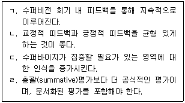
- ㄱ, ㄴ
- ㄷ, ㄹ
- ㄱ, ㄴ, ㄷ
- ㄴ, ㄷ, ㄹ
- ㄱ, ㄴ, ㄷ, ㄹ
(정답률: 알수없음)
18. 해결중심 수퍼비전에 관한 설명으로 옳지 않은 것은?
- 명확하고 측정가능한 목표를 설정한다.
- 수퍼바이지가 변화를 지속하도록 격려한다.
- 예외질문은 문제가 발생하지 않은 상황을 발견하게 한다.
- 수퍼바이지의 역량을 높이기 위해 강점보다는 수퍼바이지의 문제에 초점을 맞춘다.
- 기적질문은 수퍼바이지가 해결된 미래를 상상하게 하여 목표설정에 도움을 준다.
(정답률: 알수없음)
19. 스톨튼버그(C. Stoltenberg) 등의 통합발달모델을 모두 고른 것은?
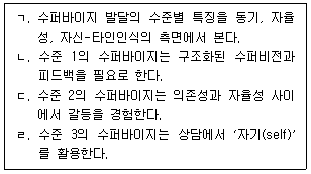
- ㄱ, ㄴ
- ㄱ, ㄷ
- ㄱ, ㄴ, ㄹ
- ㄴ, ㄷ, ㄹ
- ㄱ, ㄴ, ㄷ, ㄹ
(정답률: 알수없음)
20. 홀로웨이(E. Holloway)의 체계적 수퍼비전 모델에서 제시한 내담자의 맥락적 요인으로 옳은 것은?
- 자기표현
- 상담 경험
- 확인된 문제와 진단
- 학습 요구와 학습 양식
- 전문가 윤리와 기준
(정답률: 알수없음)
21. 스코볼트(T. Skovholt)와 로네스타드(M. Rønnestad)의 전생애 발달 모델 중 '초기 대학원생 상태'에 관한 설명으로 옳은 것은?
- 심리치료에 자신의 성격을 통합한다.
- 불안감을 느끼고, 의존적이며, 상처받기 쉽다.
- 보수적이고, 올바르게 행해야 한다는 압력을 느낀다.
- 융통성 있고, 개인화된 기법을 사용한다.
- 현재의 상실이 주요한 과제이다.
(정답률: 알수없음)
22. 버나드(J. Bernard)의 변별모델 수퍼비전에 관한 설명으로 옳은 것은?
- 이론 지향적이고 기술적 절충주의를 배제한다.
- 개별 수퍼바이지의 요구에 맞추어 수퍼바이저의 역할과 초점이 결정된다.
- 회기 내에서는 수퍼바이저의 개입기술을 변경하지 않는다.
- 수퍼비전에서 초점이 되는 세 가지 영역으로 개념화, 상담과정, 평가의 영역을 제시한다.
- 개념화 기술은 수퍼바이지의 개인적 특성이 상담과정에 미치는 영향을 다룬다.
(정답률: 알수없음)
23. 헤스(A. Hess)의 발달적 수퍼비전 모델에서 제시한 수퍼바이저 정체성의 발달단계에 관한 설명으로 옳지 않은 것은?
- 탐색단계에서는 수퍼비전을 전문적 활동으로 보게 된다.
- 탐색단계에서는 수퍼바이지에게 미치는 자신의 영향력을 인식하게 된다.
- 초기단계에서는 수퍼바이지와 더 동일시하는 경향이 있다.
- 초기단계는 수퍼바이지가 필요로 하는 것을 탐색단계보다 더 잘 인식한다.
- 확립단계에서는 수퍼바이지와의 신뢰 수준을 촉진시키면서 수퍼바이저로서의 정체성을 확립하게 된다.
(정답률: 알수없음)
24. 왓킨스(C. Watkins)의 수퍼바이저 발달단계에 관한 설명으로 옳은 것은?
- 역할회복/전환 단계에서는 개별화된 이론으로 일관성을 갖게 된다.
- 역할통합 단계에서는 수퍼바이저로서의 확고한 정체감을 갖는다.
- 역할충격 단계에서는 자신과 수퍼바이지에 대해 보다 현실적이고 정확한 인식을 한다.
- 역할숙련 단계에서는 수퍼비전 문제를 효과적이면서 적절하게 다룰 수 있다.
- 역할충격 단계, 역할회복/전환 단계, 역할숙련 단계, 역할통합 단계의 순으로 발달한다.
(정답률: 알수없음)
25. 다음 사례에서 수퍼바이지에게 수퍼바이저가 확인해야 하는 내용으로 옳지 않은 것은?
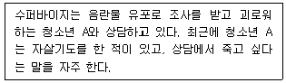
- 내담자의 안전을 확보하였는가?
- 자살 계획의 구체성과 치명성을 파악하였는가?
- 자살에 대한 언급을 자제하였는가?
- 자살충동의 심각성 정도를 파악하였는가?
- 내담자의 보호요인을 확인하였는가?
(정답률: 알수없음)
2과목: 청소년 관련 법과 행정
26. 청소년복지 지원법령상 청소년의 우대 등에 관한 내용으로 옳지 않은 것은?
- 국가가 운영하는 문화시설을 청소년이 이용하는 경우 그 이용료를 면제하거나 할인할 수 있다.
- 이용료를 면제받거나 할인을 받으려는 청소년은 시설의 관리자에게 학생증, 청소년증 등 나이를 확인할 수 있는 증표를 제시하여야 한다.
- 청소년증은 다른 사람에게 양도하거나 빌려주어서는 아니 된다.
- 시설 이용료를 면제받거나 할인받을 수 있는 대상은 9세 이상 24세 이하의 청소년이다.
- 「초ㆍ중등교육법」제2조에 따른 학교에 재학 중인 18세 초과 24세 이하인 청소년도 시설이용료를 면제받거나 할인받을 수 있다.
(정답률: 알수없음)
27. 청소년 기본법상 청소년육성 전담공무원에 관한 설명으로 옳지 않은 것은?
- 청소년육성 전담공무원의 임용 등에 필요한 사항은 대통령령으로 정한다.
- 청소년지도사 또는 청소년상담사의 자격을 가진 사람으로 한다.
- 관할구역의 청소년과 청소년지도자 등에 대하여 그 실태를 파악하고 필요한 지도를 하여야 한다.
- 시ㆍ군ㆍ구의 청소년육성 전담기구에 청소년육성 전담공무원을 둘 수 있다.
- 관계 행정기관, 청소년단체 및 청소년시설의 설치ㆍ운영자는 청소년육성 전담공무원의 업무수행에 협조하여야 한다.
(정답률: 알수없음)
28. 청소년 기본법상 기본이념으로 옳은 것을 모두 고른 것은?
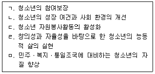
- ㄱ, ㄴ, ㅁ
- ㄴ, ㄷ, ㄹ
- ㄷ, ㄹ, ㅁ
- ㄱ, ㄴ, ㄹ, ㅁ
- ㄱ, ㄴ, ㄷ, ㄹ, ㅁ
(정답률: 알수없음)
29. 청소년 기본법상 청소년육성기금의 조성 재원에 해당하는 것을 모두 고른 것은?
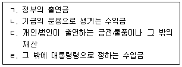
- ㄱ, ㄴ
- ㄷ, ㄹ
- ㄱ, ㄴ, ㄷ
- ㄴ, ㄷ, ㄹ
- ㄱ, ㄴ, ㄷ, ㄹ
(정답률: 알수없음)
30. 청소년 기본법상 여성가족부장관의 청소년육성기금 관리ㆍ운용에 관한 사무를 위탁할 수있는 기관이 아닌 것은?
- 한국청소년단체협의회
- 한국청소년상담복지개발원
- 한국청소년정책연구원
- 한국청소년활동진흥원
- 서울올림픽기념국민체육진흥공단
(정답률: 알수없음)
31. 청소년 기본법상 청소년정책위원회의 심의ㆍ조정에 관한 설명으로 옳지 않은 것은?
- 청소년정책의 제도개선에 관한 사항
- 청소년정책의 분석ㆍ평가에 관한 사항
- 청소년정책의 분야별 주요 시책에 관한 사항
- 청소년활동프로그램의 개발과 보급에 관한 사항
- 둘 이상의 행정기관에 관련되는 청소년정책의 조정에 관한 사항
(정답률: 알수없음)
32. 청소년 기본법령상 청소년상담사의 배치기준으로 옳지 않은 것은?
- 특별자치도의 청소년상담복지센터: 청소년상담사 3명 이상
- 시ㆍ군ㆍ구의 청소년상담복지센터: 청소년상담사 1명 이상
- 청소년쉼터: 청소년상담사 1명 이상
- 청소년자립지원관: 청소년상담사 2명 이상
- 청소년치료재활센터: 청소년상담사 1명 이상
(정답률: 알수없음)
33. 청소년 기본법의 정의 규정이다. ( )에 들어갈 내용으로 옳은 것은?
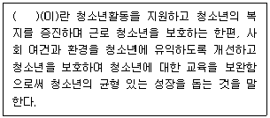
- 청소년육성
- 청소년복지
- 청소년활동
- 청소년보호
- 청소년교류
(정답률: 알수없음)
34. 청소년복지 지원법상 청소년회복지원시설에서 보호를 받는 청소년은?
- 가정 밖 청소년
- 학교 밖 청소년
- 이주배경청소년
- 「소년법」제32조제1항제1호에 따른 감호위탁 처분을 받은 청소년
- 「학교폭력예방 및 대책에 관한 법률」제2조제4호의 학교폭력으로부터 피해를 입은 학생
(정답률: 알수없음)
35. 청소년복지 지원법상 청소년부모에 대한 지원으로 옳지 않은 것은?
- 교육지원은 청소년부모에 대한 교육 지원과 아동양육 및 교육서비스로 구분된다.
- 가족지원서비스에는 방문건강관리사업 서비스와 가족관계 증진 서비스 등이 포함된다.
- 복지지원은 생활지원, 의료지원, 주거지원, 청소년활동지원 등에 따라 물품 또는 서비스 형태로 제공한다.
- 청소년부모에 대한 지원에는 가족지원서비스, 복지지원, 교육지원, 직업체험 및 취업지원이 있다.
- 직업체험 및 취업지원에는 청소년부모 대상 직업체험과 훈련, 직업교육 훈련 등이 포함된다.
(정답률: 알수없음)
36. 근거법이 같은 것으로 짝지어진 것은?
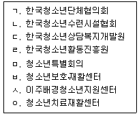
- ㄱ, ㄴ, ㄹ
- ㄱ, ㄷ, ㄹ
- ㄷ, ㅅ, ㅇ
- ㄱ, ㄴ, ㄷ, ㄹ
- ㄷ, ㅂ, ㅅ, ㅇ
(정답률: 알수없음)
37. 매체물이 청소년에게 유해한 지를 심의하는 기관이 아닌 것은?
- 청소년보호위원회
- 간행물윤리위원회
- 청소년정책위원회
- 게임물관리위원회
- 영상물등급위원회
(정답률: 알수없음)
38. 청소년유해매체물을 판매하려는 자는 상대방의 나이 및 본인여부를 확인해야 한다. 청소년보호법령상 상대방의 나이 및 본인여부를 확인하는 방법으로 명시되어 있지 않은 것은?
- 신용카드를 통한 인증
- 대면을 통한 신분증 확인
- 전화를 통한 부모로부터의 확인
- 「전자서명법」제2조제6호에 따른 인증서
- 팩스 또는 우편으로 수신한 신분증 사본 확인
(정답률: 알수없음)
39. 소년법상 보호처분의 결정에 관한 설명으로 옳지 않은 것은?
- 보호처분은 1호 처분부터 10호 처분까지 있다.
- 보호처분에는 1개월 이내의 소년원 송치 처분도 있다.
- 사회봉사명령의 처분은 10세 이상 14세 미만의 소년에게만 할 수 있다.
- 수강명령의 처분은 12세 이상의 소년에게만 할 수 있다.
- 소년의 보호처분은 그 소년의 장래 신상에 어떠한 영향도 미치지 아니한다.
(정답률: 알수없음)
40. 청소년활동 진흥법상 청소년수련시설이 아닌 것은?
- 청소년수련관
- 청소년문화의 집
- 청소년야영장
- 유스호스텔
- 작은도서관
(정답률: 알수없음)
41. 청소년활동 진흥법에서 정의한 용어는?
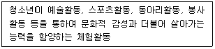
- 청소년수련활동
- 청소년교류활동
- 청소년문화활동
- 청소년동아리활동
- 청소년자원봉사활동
(정답률: 알수없음)
42. 청소년활동 진흥법에 명시된 '청소년교류활동의 지원'에 해당하지 않은 것은?
- 남ㆍ북청소년교류활동의 제도적 지원
- 국제청소년교류활동의 지원
- 청소년교류활동의 사후 지원
- 교포청소년교류활동의 지원
- 청소년축제 발굴의 지원
(정답률: 알수없음)
43. 청소년활동 진흥법령상 청소년운영위원회에 관한 설명으로 옳지 않은 것은?
- 청소년운영위원회(이하 “운영위원회”라 한다)는 10명 이상 20명 이하의 청소년으로 구성하여야 한다.
- 운영위원회 위원의 임기는 2년으로 한다.
- 국가 및 지방자치단체는 예산의 범위에서 운영위원회의 운영에 필요한 경비를 지원할 수 있다.
- 운영위원회의 위원장은 필요시 회의를 소집하며, 그 의장이 된다.
- 운영위원회의 위원장은 운영위원회를 대표하고, 운영위원회의 직무를 총괄한다.
(정답률: 알수없음)
44. 아동ㆍ청소년의 성보호에 관한 법률상 장애 아동ㆍ청소년에 대한 간음 등에 관한 설명이다. ( )에 들어갈 연령으로 옳은 것은?
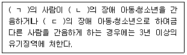
- ㄱ: 19세 이상, ㄴ: 13세 미만, ㄷ: 13세 미만
- ㄱ: 19세 이상, ㄴ: 13세 이상, ㄷ: 13세 이상
- ㄱ: 19세 이상, ㄴ: 16세 미만, ㄷ: 16세 미만
- ㄱ: 24세 이상, ㄴ: 16세 미만, ㄷ: 16세 미만
- ㄱ: 24세 이상, ㄴ: 16세 이상, ㄷ: 16세 이상
(정답률: 알수없음)
45. 아동ㆍ청소년의 성보호에 관한 법률상 공소시효에 대한 특례로 옳지 않은 것은?
- 아동ㆍ청소년대상 성범죄의 공소시효는 해당 성범죄로 피해를 당한 아동ㆍ청소년이 성년에 달한 날부터 진행한다.
- 13세 미만의 사람에게 강간 등 상해ㆍ치상에 이르게 한 경우는 공소시효를 따로 적용하지 않는다.
- 신체적 또는 정신적 장애가 있는 아동ㆍ청소년에게 강간 등 상해ㆍ치상에 이르게 한 경우도 공소시효를 따로 적용하지 않는다.
- 아동ㆍ청소년을 강제추행한 경우, 디엔에이(DNA) 증거 등 그 죄를 증명할 수 있는 과학적 증거가 있는 때에는 공소시효가 10년 연장된다.
- 아동ㆍ청소년 성착취물을 제작ㆍ수입 또는 수출한 경우는 그 범죄가 신고ㆍ적발된 직후 10년의 공소시효가 발생하고 1회 자동 연장된다.
(정답률: 알수없음)
46. 아동ㆍ청소년의 성보호에 관한 법률에서 명시된 '성매매 피해아동ㆍ청소년 지원센터'의 업무를 모두 고른 것은?
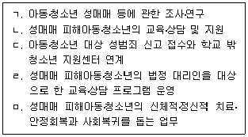
- ㄱ, ㄴ, ㄷ
- ㄴ, ㄹ, ㅁ
- ㄷ, ㄹ, ㅁ
- ㄱ, ㄴ, ㄹ, ㅁ
- ㄱ, ㄴ, ㄷ, ㄹ, ㅁ
(정답률: 알수없음)
47. 소년법상 '조사와 심리'에 관한 설명으로 옳은 것은?
- 소년부 판사는 법원주사보나 보호관찰관에게 동행영장을 집행하게 할 수 없다.
- 소년 보호사건의 심리에 필요한 사항은 대법원규칙으로 정한다.
- 소년부 판사는 직권에 의하거나 사건 본인, 보호자 또는 보조인의 청구에 의하여 심리 기일을 변경할 수 없다.
- 조사관, 보호자 및 보조인은 심리 기일에 출석할 수 없다.
- 동행영장은 소년부 판사가 집행하며, 지체 없이 보호자나 보조인에게 알려야 한다.
(정답률: 알수없음)
48. 소년법상 ( )에 들어갈 청소년 연령으로 옳은 것은?
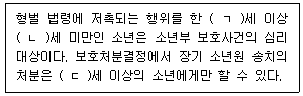
- ㄱ: 9, ㄴ: 14, ㄷ: 10
- ㄱ: 10, ㄴ: 14, ㄷ: 12
- ㄱ: 14, ㄴ: 19, ㄷ: 14
- ㄱ: 14, ㄴ: 24, ㄷ: 14
- ㄱ: 18, ㄴ: 24, ㄷ: 18
(정답률: 알수없음)
49. 학교폭력예방 및 대책에 관한 법률상 학교의 장이 자체적으로 해결할 수 있는 학교폭력사건이 아닌 것은?
- 재산상 피해가 없는 경우
- 학교폭력이 지속적이지 않은 경우
- 재산상 피해가 즉각 복구되거나 복구약속이 있는 경우
- 학교폭력에 대한 신고, 진술, 자료제공 등에 대한 보복행위가 아닌 경우
- 4주의 신체적ㆍ정신적 치료가 필요한 진단서를 발급받은 경우
(정답률: 알수없음)
50. 학교 밖 청소년 지원에 관한 법률상 '학교 밖 청소년'이 아닌 자는?
- 중학교 입학 후 두 달을 결석한 14세 수○이
- 초등학교 과정의 취학을 유예한 10세 경○이
- 고등학교에서 자퇴한지 이제 일주일이 된 16세 성○이
- 고등학교에서 퇴학처분을 받고 막 한 달이 된 17세 보○이
- 중학교 졸업 후 고등학교 진학을 미루고 1년이 지난 17세 민○이
(정답률: 알수없음)
3과목: 상담연구방법론의 실제
51. 질적연구 패러다임에 관한 특징으로 옳은 것은?
- 객관적 실재를 가정한다.
- 연구결과의 일반화를 추구한다.
- 연구과정에서 연구자의 가치가 개입된다.
- 통계분석을 통해 변수 간 인과관계를 검증한다.
- 연구자는 연구대상과 독립적으로 거리를 유지한다.
(정답률: 알수없음)
52. 상담 연구의 과학적 특성으로 옳지 않은 것은?
- 한 번 정립된 이론도 수정될 수 있어야 한다.
- 객관적이고 타당한 근거를 통해 결론을 내려야 한다.
- 자료는 합리적이고 체계적인 방법으로 수집해야 한다.
- 기존의 연구 결과도 반복해서 검증할 수 있어야 한다.
- 동일한 여건에서 동일한 방법으로 연구하여도 연구자가 달라지면 결과가 달라져야 한다.
(정답률: 알수없음)
53. 가설 검정에 관한 설명으로 옳은 것을 모두 고른 것은?
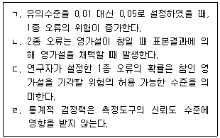
- ㄱ, ㄷ
- ㄴ, ㄹ
- ㄱ, ㄴ, ㄷ
- ㄴ, ㄷ, ㄹ
- ㄱ, ㄴ, ㄷ, ㄹ
(정답률: 알수없음)
54. 연구문제 및 가설에 관한 설명으로 옳은 것을 모두 고른 것은?
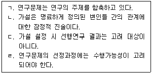
- ㄱ, ㄷ
- ㄱ, ㄹ
- ㄴ, ㄷ
- ㄱ, ㄴ, ㄹ
- ㄴ, ㄷ, ㄹ
(정답률: 알수없음)
55. 조작적 정의에 관한 설명으로 옳은 것을 모두 고른 것은?
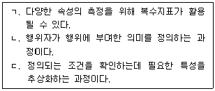
- ㄱ
- ㄴ
- ㄱ, ㄴ
- ㄱ, ㄷ
- ㄴ, ㄷ
(정답률: 알수없음)
56. 다음 사례에 나타난 변수에 관한 설명으로 옳은 것은?
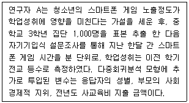
- 가설에서 독립변수는 등간척도로 측정되었다.
- 학업성취는 독립변수이다.
- 부모의 사회경제적 지위는 종속변수이다.
- 전년도 사교육비 지출 금액은 통제변수이다.
- 가설에서 종속변수는 비율척도로 측정되었다.
(정답률: 알수없음)
57. 측정과 척도에 관한 설명으로 옳지 않은 것은?
- 비율척도에서 0은 측정하고자 하는 특성의 정도가 전혀 없음을 의미한다.
- 서열척도는 측정하고자 하는 특성의 대상별 차이 정도에 수치를 부여한다.
- 등간척도는 점수들의 순위에 대한 정보를 포함하고 있다.
- 명목척도는 연구대상을 상호배타적으로 분류한다.
- 비율척도는 측정 점수를 바탕으로 몇 배 더 크다는 표현이 가능하다.
(정답률: 알수없음)
58. 다음 사례에 나타난 표집방법은?
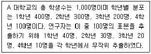
- 눈덩이 표집
- 체계적 표집
- 판단 표집
- 층화 표집
- 집락 표집
(정답률: 알수없음)
59. 변수 X와 Y 간의 피어슨 상관계수(Pearson correlation coefficient)에 관한 설명으로 옳은 것은?
- X와 Y에 동일한 양의 상수를 곱할 경우, 피어슨 상관계수는 커지게 된다.
- X와 Y에 동일한 음의 상수를 곱할 경우, 피어슨 상관계수는 0이 된다.
- X와 Y 간의 피어슨 상관계수가 0.5이면, X는 Y분산의 50 %를 설명한다.
- X와 Y간의 공분산 크기와 피어슨 상관계수는 무관하다.
- 피어슨 상관계수 절대값의 크기는 두 변수 간 선형적 관계의 강도를 나타낸다.
(정답률: 알수없음)
60. 측정의 타당도에 관한 설명으로 옳지 않은 것은?
- 측정의 타당도란 측정 도구가 측정하고자 하는 특성을 얼마나 정확하게 측정하고 있는가를 의미한다.
- 비체계적 오차가 작을수록 측정의 타당도가 높아진다.
- 공존(concurrent)타당도와 예측(predictive)타당도는 준거관련(criterion-related)타당도에 해당한다.
- 수렴(convergent)타당도와 판별(discriminant)타당도는 구인(construct)타당도에 해당한다.
- 요인분석 기법을 이용하여 구인타당도를 확인할 수 있다.
(정답률: 알수없음)
61. 실험의 타당도에 관한 설명으로 옳은 것을 모두 고른 것은?
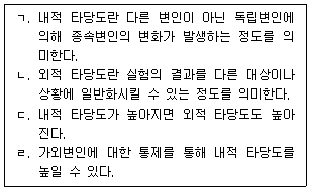
- ㄱ, ㄴ
- ㄴ, ㄷ
- ㄷ, ㄹ
- ㄱ, ㄴ, ㄹ
- ㄱ, ㄷ, ㄹ
(정답률: 알수없음)
62. 측정도구의 신뢰도를 측정하는 방법에 관한 설명으로 옳지 않은 것은?
- 검사-재검사법은 측정을 반복 실시하여 측정도구의 안정성을 평가한다.
- 동형검사법은 동일한 개념을 복수의 다른 측정도구를 이용하여 평가한다.
- 검사-재검사법은 응답자가 첫 번째 응답을 기억하여 두 번째 응답을 할 수 있다는 단점이 있다.
- 동형검사법은 첫 번째 측정도구와 매우 유사한 동형의 다른 측정도구를 개발하기 어렵다는 단점이 있다.
- 검사-재검사법은 동일 집단을 대상으로 측정하고 동형검사법은 다른 집단을 대상으로 측정한다.
(정답률: 알수없음)
63. 다음의 사례에서 나타난 실험의 타당도 저해 요인은?
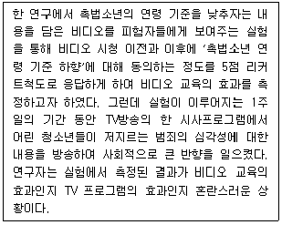
- 우연적 사건
- 보상효과
- 통계적회귀
- 표본선택의 오류
- 실험대상의 탈락
(정답률: 알수없음)
64. 다음 사례에 나타난 실험설계방법의 일반적인 특징에 관한 설명으로 옳은 것은?
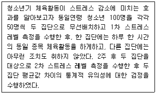
- 처치 전 두 집단의 이질성을 전제로 한다.
- 가외변인 효과의 통제를 위해 무선배치가 활용된다.
- 복수의 독립변인 간 상호작용 효과를 파악하는데 용이하다.
- 처치효과의 유의성 판단을 위해 경로분석이 활용된다.
- 준실험설계에 비해 실험결과의 내적 타당도가 낮다.
(정답률: 알수없음)
65. 다음은 아버지의 직업지위와 연소득이 자녀의 연소득에 미치는 영향에 대한 경로계수추정 결과이다. 자녀의 연소득에 대한 아버지 직업지위의 총효과(ㄱ)와 아버지 연소득이 자녀의 학업성취를 거쳐 자녀의 연소득에 영향을 미치는 간접효과(ㄴ)는?
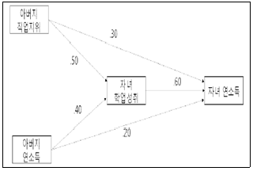
- ㄱ: .60, ㄴ: 1.0
- ㄱ: 1.40, ㄴ: .24
- ㄱ: .30, ㄴ: .24
- ㄱ: 1.40, ㄴ: .60
- ㄱ: .60, ㄴ: .24
(정답률: 알수없음)
66. 각각의 자료수집방법이 옳게 연결된 것은?
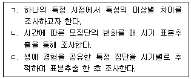
- ㄱ: 횡단조사, ㄴ: 추세조사, ㄷ: 패널조사
- ㄱ: 횡단조사, ㄴ: 패널조사, ㄷ: 코호트조사
- ㄱ: 코호트조사, ㄴ: 추세조사, ㄷ: 횡단조사
- ㄱ: 횡단조사, ㄴ: 추세조사, ㄷ: 코호트조사
- ㄱ: 패널조사, ㄴ: 추세조사, ㄷ: 코호트조사
(정답률: 알수없음)
67. 다음은 청소년들의 스마트폰 이용시간이 학업성취에 미치는 효과에 대한 단순회귀분석결과의 일부이다. 옳은 설명을 모두 고른 것은? (단, N=20이고 소숫점 둘째자리 이하는 버림한다.)
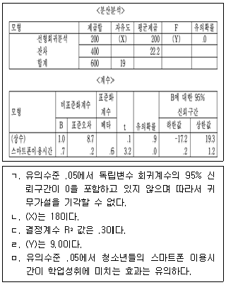
- ㄱ, ㄴ
- ㄱ, ㄴ, ㄹ
- ㄷ, ㄹ, ㅁ
- ㄴ, ㄷ, ㄹ, ㅁ
- ㄱ, ㄴ, ㄷ, ㄹ, ㅁ
(정답률: 알수없음)
68. 다음 중 진실험설계(true experimental design)를 모두 고른 것은?
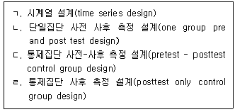
- ㄱ, ㄴ
- ㄱ, ㄷ
- ㄴ, ㄷ
- ㄷ, ㄹ
- ㄴ, ㄷ, ㄹ
(정답률: 알수없음)
69. 근거이론에 관한 설명으로 옳지 않은 것은?
- 자료분석 과정이 개방코딩, 축코딩, 선택코딩으로 진행된다.
- 코빈과 스트라우스(J. Corbin & A. Strauss)에 의해 개발되었다.
- 선택코딩은 정보의 범주를 서로 연결시키는 단계이다.
- 체계적인 자료분석을 통해 이론을 생성하는 것을 강조한다.
- 상징적 상호작용론에 철학적 기반을 두고 있다.
(정답률: 알수없음)
70. 분산분석에 사용하는 사후검정 방법이 바르게 묶인 것은?
- Tukey 검정, Kolmogorov-Smirnov 검정
- Tukey 검정, Scheffé 검정
- Scheffé 검정, Wilcoxon 검정
- Kolmogorov-Smirnov 검정, Scheffé 검정
- Wilcoxon 검정, Bonferroni 검정
(정답률: 알수없음)
71. 솔로몬 4집단 설계에 관한 설명으로 옳은 것을 모두 고른 것은?
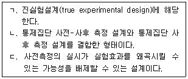
- ㄱ
- ㄷ
- ㄱ, ㄴ
- ㄴ, ㄷ
- ㄱ, ㄴ, ㄷ
(정답률: 알수없음)
72. 실험에서 집단 내 설계에 관한 설명으로 옳은 것은?
- 피험자 간 설계라고도 한다.
- 이월효과가 발생하지 않는다.
- 반복측정설계라고도 한다.
- 집단 간 설계에 비해 많은 피험자가 필요하다.
- 집단을 나누어 서로 상이한 처치를 하는 설계이다.
(정답률: 알수없음)
73. 합의적 질적연구(CQR)에서 자료의 특성을 나타내는 빈도표시를 사용하여 범주를 일반적, 전형적, 변동적으로 표시하는 분석 단계는?
- 영역코딩
- 중심개념코딩
- 교차분석
- 감사
- 담화분석
(정답률: 알수없음)
74. 다음의 실험설계에 관한 설명으로 옳지 않은 것은?
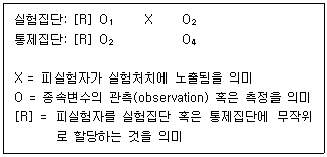
- 진실험설계(true experimental design)에 해당한다.
- 가외변인인 성숙효과를 통제하려고 한다.
- 실험처치의 전과 후에 모두 측정을 한다.
- 실험처치 전 집단 간 동질성을 확보하고자 한다.
- 실험처치의 효과는 (O2-O3)-(O1-O4)이다.
(정답률: 알수없음)
75. 연구윤리에 관한 설명으로 옳지 않은 것은?
- 연구 대상의 연구 참여는 자발적인 것이지만 연구가 시작되면 연구 참여를 그만둘 수 없다.
- 연구 과정에서 나타나지 않은 데이터를 실재하는 것처럼 제시하는 경우는 위조에 해당한다.
- 연구자 자신의 이전 저작물을 인용할 때도 출처 표시를 준수해야 한다.
- 저자로서 정당한 자격을 갖춘 사람에게 저자 자격을 부여하지 않는 경우는 부당한 저자 표기에 해당한다.
- 연구자료를 의도적으로 실제와 다르게 변경하는 경우는 변조에 해당한다.
(정답률: 알수없음)
5년